First Android Game - Part 19 - Adding ready to playSep 03, 2023This is part 19 of making my first Android Game. If you missed part18, you can find it hereIn the asteroid example, there is a "Ready" button for all the players. If all the players are ready to play then there will be a "start game" button that appears on the master
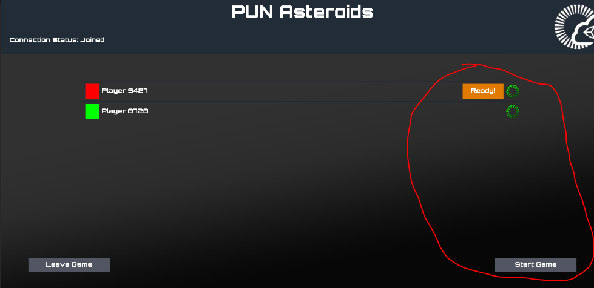
In the Tomato vs Potato game, on the PlayerItem prefab, I added a ready to play button. The navigation arrows are enabled by default
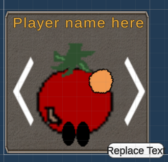
In TomtatoVsPotato.cs, I added the const string Player_Ready. This will be used for the hashtable
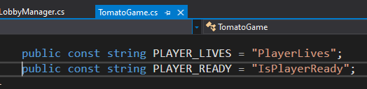
In PlayerItem.cs, I added 4 variables. One for the player ready button, player ready text, a boolean to check if player is ready and the actor number.
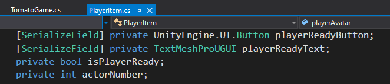
In PlayerItem.cs. I removed ApplyLocalChanges(). Instead, in the Start() I will check if the ActorNumber matches the local player. If no, disable Start Game Button and the navigation arrows. otherwise set the hashtable for IsPlayeReady, set the score and coins
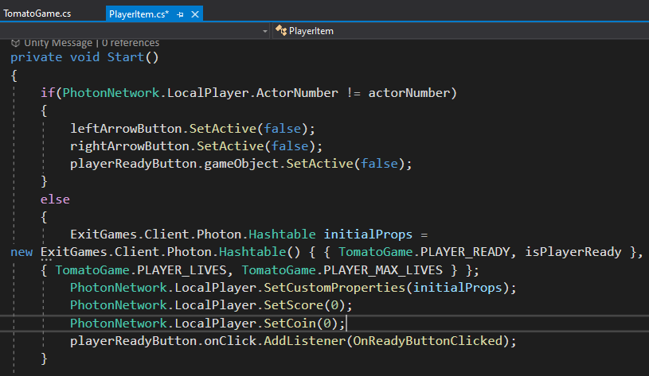
In SetPlayerInfo(), the actor number is assigned
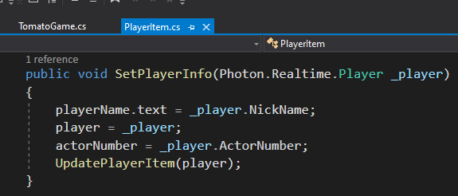
OnReadyButtonClicked() sets the isPlayerReady boolean and calls SetPlayerReady() in PlayerItem.cs and if it's the master - LocalPlayerPropertiesUpdated() from LobbyMaanger.cs
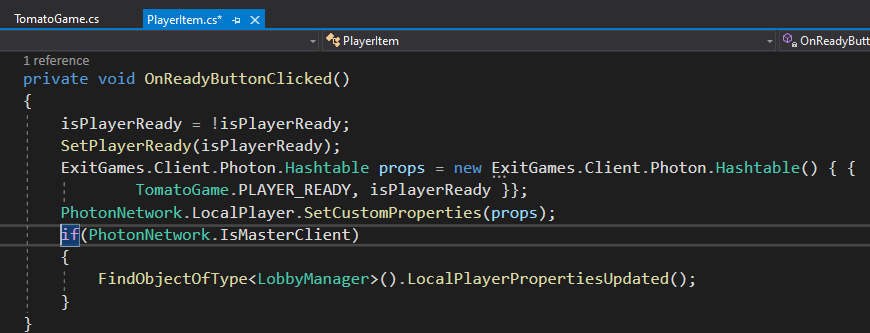
SetPlayerReady sets the player ready text depending on the isPlayerReady boolean.
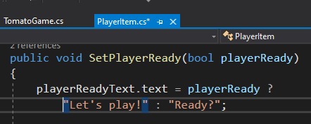
The LocalPlayerPropertiesUpdated() from LobbyManager.cs will call a boolean function CheckPlayersReady(), this boolean will tell me if the Start Game Button should be enabled or disabled
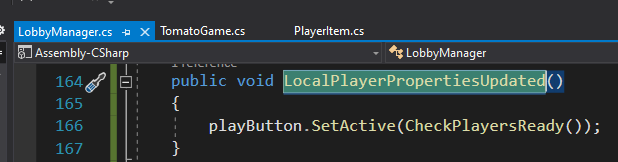
The CheckPlayerReady() will return false if it is not the master, if Player_Ready property is not found or if PlayerReady is false. Otherwise return true
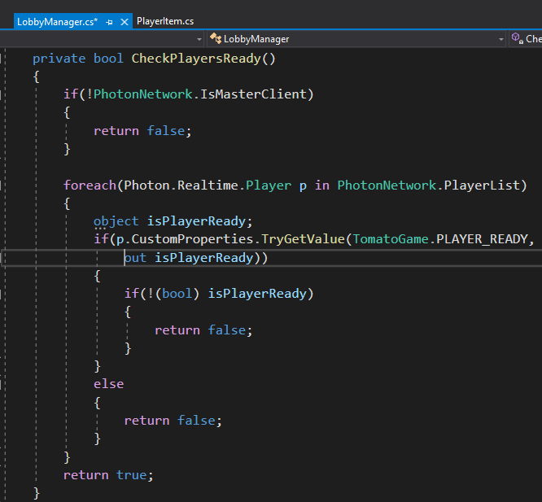
In UpdatePlayerList(), added logic to loop through all the players and if the PlayerReady property is found, set the text by calling SetPlayerReady() from PlayerItem.cs
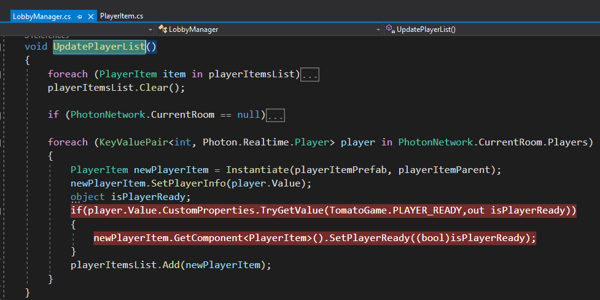
In LobbyManager.cs, CheckPlayersReady() is also called in OnPlayerLeftRoom() and OnPlayerEnteredRoom()
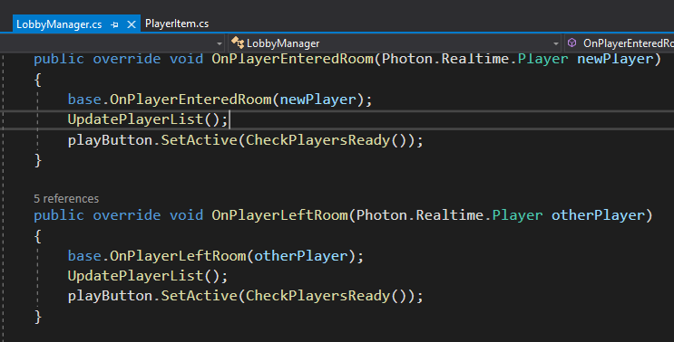
In LobbyManager.cs, CheckPlayersReady() is also called in OnPlayerJoinedRoom()
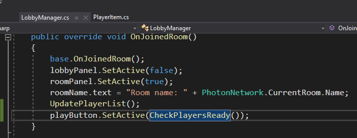
However, some bugs occured. First bug is when I enter the room, the PlayerIsReady text hasn't changed yet. Upon further investigation, it seems that in LobbyMaanger.cs -> UpdatePlayerList(), there is no PlayerReadyValue() yet when I first enter the room. However, if I leave the room and reenter, the property is there. In addition, the value does not reset if I leave and reenter the room
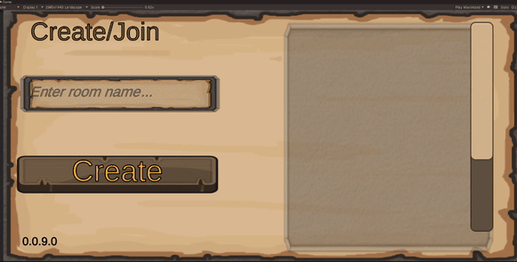
The second bug is that the Start Game Button appears at the wrong time. It appears when "Ready?" is displayed. Upon further investigation, it seems that in LobbyManager.cs -> CheckPlayerReady(), the check for if(!(bool) isPlayerReady) condition is true (meaning isPlayerReady is false) when the boolean isPlayerReady boolean should be true.
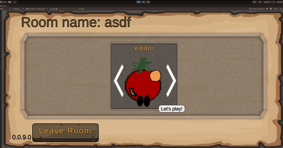
To resolve the first bug, The OnPlayerPropertiesUpdate() calls UpdatePlayerItem() from PlayerItem.cs. Therefore, when properties changes, I can update the text in UpdatePlayerItem.cs.
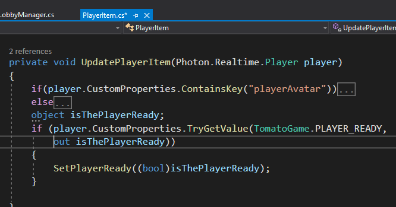
This appears to resolve the value resetting as well when leaving the room and reentering the room
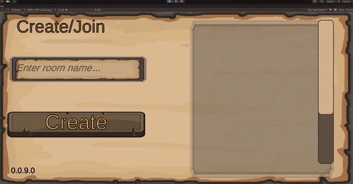
The second bug where the Start Game button appears at the wrong time. After adding some debug logs, it seems like that when the button is clicked, the boolean is updated correctly, however, the SetPlayerPropertiesUpdate() is called AFTER CheckPlayerReady. Therefore, say we are setting isPlayerReady to true, the logic is: Button clicked and set boolean to true, CheckPlayerReady but boolean is still false, UpdatePlayerItem change boolean to true. Notice that the boolean is changed to true AFTER CheckPlayerReady. This appears to be the problem
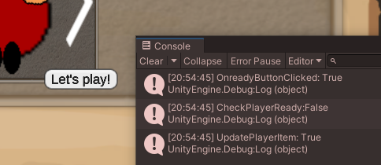
I decided to check what the Asteroid game does since it is similar logic. It seems that CheckPlayerReady() is called again after UpdatePlayerItem, whereas my game isn't doing that. In AsteroidGame, their LobbyMainPanel.cs has an OnPlayerPropertiesUpdate(), when SetPlayerReady() is called, the CheckPlayerReady() is called right after which cause the StartButton to be enabled correctly.
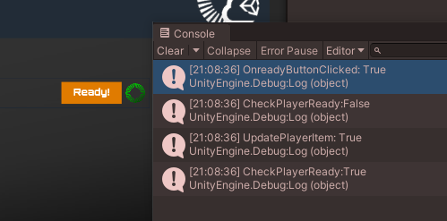
Recent blogsSee all blogs